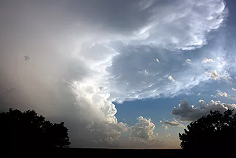
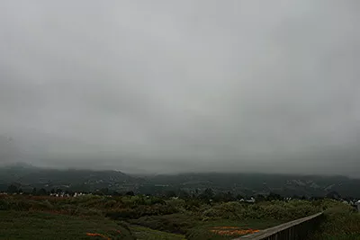

Weather WatchThe living atmosphere
Read your local sky, follow a storm, and test the science behind the forecast. Start with a city, then investigate what the atmosphere is doing and why.
1 · Central Weather Cockpit
Current conditions from Open-Meteo and classroom calculations derived from them.
2 · Is It Okay to Drive? Road Safety Engine
Translating atmospheric conditions into pavement friction, stopping distance, and vehicle safety.
Interactive Braking Distance Physics
Physics Equation: d = v² / (2μg)Stopping distance is proportional to the square of your speed and inversely proportional to road surface friction (μ). When moisture, slush, or ice reduces friction, braking distances multiply dramatically.
When water accumulates deeper than tire tread depth (~1/12 in), a water wedge lifts tires entirely off the pavement. Never use cruise control in the rain.
Bridges lose heat via convection from both above and underneath. Elevated bridge decks and overpasses freeze solid long before ground-level road surfaces!
Never use high beams in fog. High beams bounce off water droplets right back into your eyes. Use low beams to cast light beneath the fog layer.
Increase your following distance from 3 seconds on dry asphalt to 5–6 seconds in rain, and 8–12 seconds on packed snow or freezing drizzle.
3 · What Clothes to Wear: Outdoor Readiness
Scientific thermal regulation based on apparent temperature, humidity, UV, and wind chill.
Warm & Comfortable
Comfortable warmth. Ideal weather for single-layer breathable attire.
Full Outdoor RecessNext-to-Skin Moisture Control
Controls sweat. Synthetic fibers or merino wool wick moisture away so cold air does not chill wet skin.
Insulation & Trapped Air
Traps warm air warmed by your body metabolism. Fleece, wool, and down create micro air pockets that insulate.
Weather Barrier (Wind & Rain)
Shields wind and water from stripping away your trapped warm air. Must be breathable to allow sweat vapor to escape.
Leg Protection
Matches ambient thermal exposure and wind friction.
Traction & Thermal Barrier
Cold ground conducts heat away through soles. Wet feet accelerate heat loss by 25 times.
Extremities & Sun Defense
Ears, fingers, and nose have high surface-area-to-mass ratios and freeze first.
Interactive Wardrobe Sandbox
Adjust environmental variables to test how thermal science changes what you must wear outside:
4 · Air Masses & Weather Fronts
How the collision of polar and tropical air masses generates precipitation and winds.
An air mass is a massive body of air covering thousands of square miles with uniform temperature and moisture, acquired from its source region (e.g., continental polar cP = cold & dry; maritime tropical mT = warm & humid). When differing air masses collide, they do not mix easily because of density differences. The boundary between them is called a front.


5 · Humidity, Dew Point & Cloud Condensation
Why dew point governs human comfort and how to calculate exact cloud base altitude.
Most people look at Relative Humidity (RH), but RH is deceptive because warm air holds vastly more water vapor than cold air (an RH of 90% at 30°F has far less water than an RH of 50% at 90°F!). Dew Point is the true measure of absolute moisture: it is the exact temperature air must cool down to for water vapor to condense into liquid droplets.
Lifting Condensation Level (LCL) Cloud Base Calculator
As rising air expands, it cools at the dry adiabatic lapse rate (~5.4°F per 1,000 ft) while dew point cools at ~1°F per 1,000 ft. The gap closes at 4.4°F per 1,000 ft. Clouds condense exactly where the air temperature cools to its dew point!
Atmospheric Cloud, Smoke & Gas Laboratory
Watch water vapor condense at the Lifting Condensation Level (LCL), or simulate smoke plumes, volcanic eruptions, and creeping gases with live fluid turbulence.
Cirrus
Wispy strands of pure ice crystals. Often the first advance signal of an approaching warm front or jet stream shift.
Altocumulus
Rolls or patches of water droplets. A "mackerel sky" indicating instability and mid-level atmospheric moisture.
Stratus

Featureless gray horizontal blanket covering the sky. Produces persistent drizzle, mist, and reduced visibility.
Cumulonimbus
Towering storm cloud with an anvil-shaped glaciated top. Hosts violent updrafts, hail, heavy rain, downbursts, and lightning.
6 · Precipitation Formation & Winter Physics
How the vertical temperature profile determines whether rain, freezing rain, sleet, or snow hits the ground.
Precipitation almost always begins as snow in the sub-freezing upper troposphere. What reaches your driveway depends on the temperature profile of the air layers it falls through on the way down:
Snow falls into a deep warm layer (>32°F) and melts completely into water, remaining liquid all the way to the surface.
Snow melts in a warm layer aloft, then falls through a shallow freezing layer near ground. The drops supercool and freeze on contact with roads, trees, and power lines!
Snow melts in a warm layer aloft, but then passes through a deep freezing layer near ground, giving the drops enough time to refreeze into tiny bouncing ice beads.
The entire atmospheric column remains below 32°F (0°C) from cloud to ground. Delicate ice crystals preserve their hexagonal symmetry without melting.
7 · The Live Storm Map: Severe Weather, Satellites & Space Observation
Tracking high-energy atmospheric disturbances from 22,236 miles above the equator.
Geostationary satellites (such as NOAA's GOES-East and GOES-West) orbit Earth at the exact same rotational rate as the planet, remaining parked over one hemisphere to capture visible, infrared, and water-vapor imagery every 30 seconds.
Storm Watch: What is overhead?
This map layers recent weather-radar precipitation, official alerts, lightning, projected storm motion, NOAA's storm outlook and any tropical cyclones. A colored radar return means precipitation is detected there; it does not by itself prove lightning, hail, a tornado, or dangerous wind.
Drag or use arrow keys to pan. Plus and minus zoom. Zero recenters. Click the map to drop an analysis pin.
Analysis point: the selected location. Click the map to analyze anywhere else.
SIMULATED. A made-up severe storm is approaching from the west, driving the map, warning, lightning and nowcast below with the same code that handles live data. Real alerts still apply to the real world.
Radar: RainViewer. Alerts: NOAA/NWS (United States only). AQI and pollen: Open-Meteo / CAMS. Lightning uses an experimental community feed and may be unavailable. Radar can lag or miss very small/weak precipitation.
When thunder is heard within 30 seconds of a flash, lightning is within 6 miles. Immediately seek substantial enclosed shelter. Wait 30 full minutes after the last thunderclap before returning outside.
Earth's rotation deflects moving air to the right in the Northern Hemisphere and to the left in the Southern Hemisphere. This is why tropical cyclones north of the equator spin counter-clockwise.
8 · Nowcasting: Will It Rain on Me in the Next Two Hours?
A forecast asks what the atmosphere will do tomorrow. A nowcast asks where the rain that already exists is heading, and when it gets here.
Analyzing: Longwood, FL LIVE
Loading the next two hours…
Meteorologists commit to a forecast, then check it. Hide the answer, predict, then see how close you were.
A forecast model simulates the physics of the whole atmosphere hours ahead. A nowcast mostly slides today's radar picture forward along its motion. It is excellent for the first hour and fades fast, because storms also grow, split and die.
The bars show intensity, not just yes or no. Light rain is under 2.5 mm/h, moderate is 2.5 to 7.6, heavy is over 7.6 (about 0.3 in/h). Ten heavy minutes can matter more than two light hours.
Drop a pin in Section 7 and every number here is recomputed for that spot. Rain 10 miles away can be dry where you stand.
How radar turns echoes into rain rate
Radar measures how much energy bounces back (dBZ). Drops are bigger in heavier rain, so Z = 200 · R1.6 converts echo to rain rate R (the Marshall–Palmer relation).
Finding the NEXRAD radar closest to this point…
9 · Storm Cells and Lightning: Distance ÷ Speed = Time
The same arithmetic a forecaster uses when a warning goes out: where is it, how fast is it moving, and will it reach me?
Analyzing: Longwood, FL LIVE
Checking for tornado and severe thunderstorm warnings…
Loading upper-air winds…
Thunder is audible about 10 miles out, and strikes can land up to 10 miles from the storm. So "if you can hear it, you can be struck." The clock restarts at every strike within 10 miles, and you wait 30 minutes after the last one.
Light arrives instantly; sound takes about 5 seconds per mile at 68°F, a bit faster in hot air. The calculator uses today's temperature, not a rounded rule.
The strike feed is a community network and can have gaps, so this page never says "all clear" until it has listened for a full 30 minutes. Your ears and the NWS always outrank this page.
10 · The Storm Outlook: Four Ingredients, One Risk
Forecasters do not guess at storms. They check whether the ingredients are on the table, then ask whether anything will light the stove.
Analyzing: Longwood, FL LIVE
Loading the SPC convective outlooks…
Dew point of 60°F or more gives storms fuel. Under 55°F, there is not enough water vapor to condense and release heat.
Convective Available Potential Energy, in J/kg: how hard a warm bubble keeps accelerating upward. Under 250 is weak; over 2,500 is explosive.
A warm layer aloft can act as a lid. Storms need a trigger (a front, a sea breeze, a hill) strong enough to punch through. Big CAPE with a strong cap often means a quiet, hot, dangerous-looking day.
Wind that changes speed or direction with height tilts and organizes storms. This page uses the wind difference between the surface and 500 hPa (about 18,000 ft) as a stand-in for 0 to 6 km shear.
11 · Tropical Desk: Reading a Hurricane Forecast
Where is it, how strong is it, and what does the famous cone actually promise?
Distances measured from: Longwood, FL LIVE
Checking the Atlantic, East Pacific and Central Pacific…
Select a storm to compare its forecast with your location.
Replay a real Florida hurricane
Official NHC best-track data. The shaded circle is the radius of tropical-storm-force wind, drawn to scale on the Section 7 map. If your location is inside it, you got those winds whether or not the center came near.
The cone shows where the center may travel, drawn so it holds the center about two-thirds of the time. Wind, rain and surge reach far outside it. Charley (2004) is the classic lesson.
The Saffir–Simpson scale ranks maximum sustained wind (Cat 1 starts at 64 kt, 74 mph). It says nothing about rain or storm surge, which cause most hurricane deaths.
A watch means hurricane conditions are possible within 48 hours; a warning means they are expected within 36. The warning arrives early on purpose: you need the time to prepare before winds reach tropical-storm force.
12 · Tomorrow's Briefing, With Attitude
A forecast app is a program that turns numbers into sentences. Change the voice and the thresholds, and watch what stays true and what is a choice.
Loading tomorrow's forecast…
Show the data behind the sentence
Word choice, rhythm, jokes. The numbers always appear exactly as measured, and a safety warning is identical in every voice.
Is 82°F "warm" or "hot"? That depends on who you ask: a Floridian in October or an Alaskan in July. Your sliders are a personal definition, and every app hides one.
13 · Meteorologist-in-Training Challenge
Apply atmospheric physics and decision science to real-world weather scenarios.
1. It is 34°F outside with light rain. Why does a road sign warn 'BRIDGE FREEZES BEFORE ROAD'?
2. You are driving into dense fog with visibility under 1/4 mile. Which headlight setting is safest?
3. Your classroom barometer reading drops sharply from 1018 hPa to 995 hPa in 6 hours. What does this indicate?
4. The thermometer reads 85°F, but the dew point is 74°F. Why does this feel oppressive and dangerous during athletic activity?
5. If you double your vehicle speed from 30 mph to 60 mph on wet pavement, how does your braking distance change?
6. A radar nowcast is very reliable for the next 30 minutes and much less so at 2 hours. Why?
7. A warned storm is 24 miles west of you and moving east at 30 mph, straight toward you. About when does it arrive?
8. You count 10 seconds between a flash and its thunder. What should you do?
9. What does the "cone of uncertainty" in a hurricane forecast show?
10. A forecast shows huge CAPE, plenty of moisture, strong shear, but also a very strong cap (large CIN) and nothing to lift the air. What is the best description?